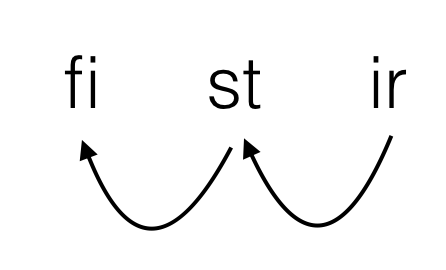

2017/08/28: 呼び出し規約を確定させる スタックの掃除をするのは呼び出し側 いじって良いレジスタは4個 (f0 ~ f3) 引数は前からスタックに積む 戻り値は単純型ならレジスタ (f0) でやり取り
さて、呼び出し規約も決まったことだし色々書いていきますかね。とりあえずフィボナッチ書こう。スタックを管理するのは（ダイスロール）f5ですな。まずはCっぽく。
int fib(int a)
{
register int f0 = a;
register int f1 = 0;
register int f2 = 1;
register int f3;
while(f0) {
f0--;
f3 = f1 + f2;
f1 = f2;
f2 = f3;
}
f0 = f1;
return f0;
}
解説
| f0 | 5 | 4 | 4 | 3 | 3 | 2 | 2 | 1 | 1 | 0 | 0 | 5 |
| f1 | 0 | 0 | 1 | 1 | 1 | 1 | 2 | 2 | 3 | 3 | 5 | |
| f2 | 1 | 1 | 1 | 1 | 2 | 2 | 3 | 3 | 5 | 5 | 8 | |
| f3 | 1 | 2 | 3 | 5 | 8 |
x86風に書いてみる
MOV f0 [ESP+4]
MOV f1 0
MOV f2 1
a: EQU f0 0
J_C b ;フラグを見てジャンプ
ADD f0 -1
MOV f3 f1
ADD f3 f2
MOV f1 f2
MOV f2 f3
JMP a
b: MOV f0 f1
JMP [ESP]
ADD ESP 4
リパに翻訳
krz f0 [f5+4]
krz f1 0
krz f2 1
is: sie f0 0
J_C ka ; どうしよう
ata f0 -1
krz f3 f1
ata f3 f2
krz f1 f2
krz f2 f3
krz xx is
ka: krz f0 f1
krz xx [f5]
ata f5 4
というか、自明に「xxをいじる = ジャンプ」なので、ジャンプ命令を作ってそれをkrz xx abcdeと書いても良い設定にすればよい。ファイクレオネにはWPのおかげで既にワープ・瞬間移動・縮地法の類がありそうなので、それを流用するのが自然な気がする。
2で出てきた設定を（明示・暗黙共に）まとめる。
krz命令では代用できない（「フラグを見てkrzするか決める」という命令はないため）ので、別命令として作りkrz xx iskaもジャンプ命令に翻訳、という感じ？いや待て、『「フラグを見てkrzするか決める」という命令はない』など誰が言った？あってもええやん！（後世が投機実行の実装に苦しむ図）（でもオモロイやん採用）「フラグを見て代入するかどうか決める」命令をどうすべきか迷ったので、打ち合わせを行った。その結果、比較演算子系統のニーモニックが全部作り直しになった。
基本構文：
fi 第一オペランド 第二オペランド 比較表現 malkrz レジスタ 値
例：
fi f0 f1 lloler malkrz f2 f3
この構文は、上記の例に即するなら、Fi f0 es f1 le loler, mal krantairzarth f2'c f3'i. 「f0がf1よりも大きいならば、f3をf2にコピーする」というリパライン語表現にちょうど対応する。
もちろん、実際の処理としては、【fi ~ lloler命令は「第一オペランドが第二オペランドよりも大きいならばフラグを立てる」命令であり、malkrz命令が「フラグが立っているときにのみ第一オペランドに第二オペランドの値を代入する」命令である】ということであり、自然なリパライン語として読めるかどうかということは正しいアセンブリ言語になるかどうかとは当然別物である。
その証拠に、リパライン語では上記の文をFi f0 es f1 le loler, krantairzarth f2'c f3'i.というふうにmalという語を抜かして表現しても意味は変わらないが、
fi f0 f1 lloler krz f2 f3
は当然「f0がf1よりも大きいならばフラグを立てる。さてそれはともかくf3をf2にコピーする」という別の意味の命令群になる。リパラオネ人がこの仕様に苦しむのは、まるで現世でC系統の言語を習い始めた人がif(a = 0)とかif(a == 0||1)とか書いてしまうようなものである。
ということで、4.に基づき前述のフィボナッチを修正していこう。
krz f0 [f5+4]
krz f1 0
krz f2 1
is: fi f0 0 cloler ; ce loler
malkrz xx ka
ata f0 -1
krz f3 f1
ata f3 f2
krz f1 f2
krz f2 f3
krz xx is
ka: krz f0 f1
krz xx [f5]
ata f5 4
よし、これで初めての関数である。やったー。
しかし、clolerがやっぱりちょっと長い気がするなぁ（他が短すぎるだけともいう）
さて、じゃあ再帰フィボナッチも実装しましょうかね。まずはC
int fib2(int a)
{
register int f0 = a;
register int f1;
register int f2;
if(f0 < 2) {
goto fin;
}
f1 = f0;
f1--;
f0 = fib2(f1);
f2 = f0;
f1--;
f0 = fib2(f1);
f2 += f0;
f0 = f2;
fin:
return f0;
}
まずはx86もどき混じりで翻訳。
fib2: krz f0 [f5+4]
fi f0 2 xyloler
malkrz xx iska
krz f1 f0
ata f1 -1
PUSH f1
CALL fib2
POP f1 ;関数呼び出しでf1が破壊されるので修復
krz f2 f0
ata f1 -1
PUSH f2
PUSH f1
CALL fib2
POP
POP f2
ata f2 f0
krz f0 f2
iska: RET
次に、関数呼び出しとスタック操作について整理しよう。
スタックにiskaをプッシュする
ata f5 -4 ; f5を持ち上げて krz [f5] iska ; 積む
スタックをポップしてiskaに代入
krz iska [f5] ; スタックの値を代入 ata f5 4 ; f5を下げる
return f0;
krz xx [f5] ; リターンアドレスに飛んで ata f5 4 ; スタックからリターンアドレスを削除
f0 = func();
; えっと、 ata f5 -4 ; スタックにリターンアドレスを krz [f5] xx ; 積む krz xx func ; 関数のアドレスにジャンプ ; でいいのかな？ ; いいえ。積んだときのxxはkrz xx funcを指しています。よってこれでは無限ループします ; さてどうしよう。 ; 普通ならここで素直にCALLのニーモニックを作ればいいんだろうが、2003'd ferlesylの作者は全部をxxへの操作としたがる人だ ; そうだ、2つのkrzを1回で行う命令を作ればいいんだ ; 名前はqa stevypo krzの略でqskrzとでもすればいいか。 ; krz fi stの後にkrz st irをすることをqskrz fi st irと書けることにすればよい。 ; 実際処理としてよくありそうなやつだし。汎用性あるし採用していいでしょ ; ということで仕切り直し
f0 = func();
ata f5 -4 ; スタックを準備 qskrz [f5] xx func ; リターンアドレスを積んで、同一命令で関数のアドレスにジャンプ
CALLの実装書いてて気づいたけど、前にxxを1増やすって書いたの嘘やん。固定長でもないし1byteでもないもん。単純に「次の命令を指すところにxxが移動する」ですな。
さて、ここまでやったところで翻訳。
fib2: krz f0 [f5+4] fi f0 2 xyloler malkrz xx iska krz f1 f0 ata f1 -1 ata f5 -4 krz [f5] f1 ata f5 -4 qskrz [f5] xx fib2 krz f1 [f5] ata f5 4 krz f2 f0 ata f1 -1 ata f5 -4 krz [f5] f2 ata f5 -4 krz [f5] f1 ata f5 -4 qskrz [f5] xx fib2 krz f2 [f5+4] ata f5 8 ata f2 f0 krz f0 f2 iska: krz xx [f5] ata f5 4
まず、5に出てきた新規設定をまとめる。
この2番目と3番目を組み合わせると、なんと関数呼び出しが実行できるのである。
また、slackで出てきた課題について述べる。
待てよ？qskrz fi st irをCでいう「fi = st; st = ir;」ではなく「tmp = st; st = ir; fi = tmp;」であると再定義してやれば、上記のコードに一切の変更を与えずかつfiとirが同一であるときXCHGとして使えるのでは！？これは楽しいぞ。とりあえず命令名を変えなくては。Fafs氏に訊こう。
